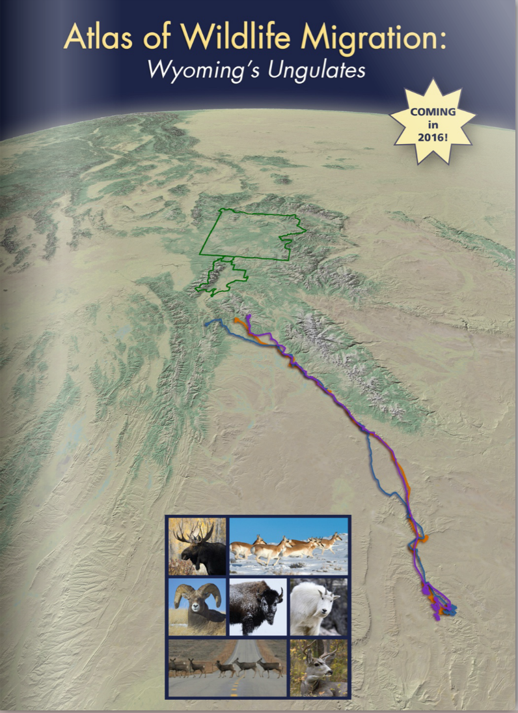
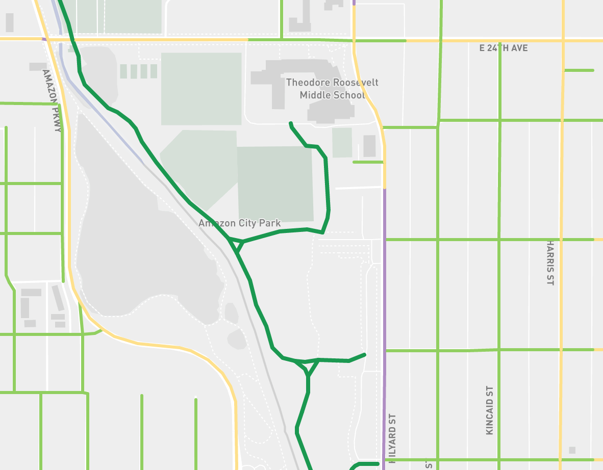

       ---
       layout: default
       title: RDC&#58; Maps
       ---
       
       <div class="blurb">
              	<h3>The North American Soccer Experiment</h3>
              	<a href="RChampineMLSmap2014.jpg"></a>
              	<p>I designed this map for the final project of my Advanced Cartography Course. With the encouragement of my Professor, <a href=http://geography.uoregon.edu/profile/jmeacham/>James Meacham</a>, I decided early in the process that would submit my map to National Geographic's Student mapping competition. This coprehensive depiction of Major League Soccer ultimately took <a href="http://education.nationalgeographic.com/education/media/student-map-awards/?ar_a=1" target="_blank">first place</a> in the National Geographic contest and also won the University of Oregon's top prize in cartography – <a href="http://geography.uoregon.edu/about/awards/">The Bill Loy Award</a>.</p>
              	<p>Though completing this map entirely solo was a massive undertaking, it was an extremely fun project because I combined two of my biggest passions – soccer and cartography. Without the guidance of a supervisor, or the safety net of any other teammates to fall back on, working on this map individually taught me some of the more gritty truths of mapmaking. It was unavoidable that some aspects I wanted to portray about the league had to be sacrificed. The story I wanted to tell had to be constrained to the requirements of the contest. Thus, the challenge I set for myself was to maximize the <a href="http://www.edwardtufte.com/tufte/books_vdqi">efficiency of every pixel</a> for delivering the most comprehensive summary of the league's history in a way that was both coherent and compelling. It was a massive achievement to receive recognition for work by both National Geographic and my University.</p>
              	<p class="skills">Skills used: <b>ArcGIS, Network Analyst, Excel, Illustrator, InDesign</b></p>
              	<hr>
               
              	<h3>Atlas of Wildlife Migration</h3>
              	<a href="http://migrationinitiative.org/sites/migration.wygisc.org/files/public/flip/index.html" target="_blank"></a>
              	<p>During my spell at the UO InfoGraphics lab, I worked as a student cartographer on the upcoming<em><a href="http://migrationinitiative.org/content/atlas-wildlife-migration" target="_blank">Atlas of Wildlife Migration</a> </em>. The <em>Atlas</em> represents a multi-year collaboration between cartographers at the University of Oregon Department of Geography and biologists from the University of Wyoming's <a href="http://migrationinitiative.org/" target="_blank">Wildlife Migration Initiative</a>. In producing this full–length print atlas, the Initiative aims to tell the story of the incredible migratory patterns of <a href="http://en.wikipedia.org/wiki/Ungulate" target="_blank">ungulates</a> in the state of Wyoming, and provide an exhaustive guide to these animal's journeys. The outreach and research presented by the book will become an important asset for local conservationists working with ungulate species.</p>
              	<p>As an assistant to the lead cartographer and production manager, I was involved in every step of the creative process – from brainstorming on a whiteboard to copy editing a near-finished product. In a nutshell, it was my duty to bring the biologists' data of life with a combination of ArcGIS, Illustrator, and InDesign. Day to day work ranged from querying tens of thousands datapoints representing hourly elk movements, to fine-tuning color schemes on hillshade and landcover basemaps. Being a part of the atlas team made me comfortable working in a rigorous production environment with constant deadlines. In this setting, my  mapmaking skills were pushed to new limits.</p>
             		<p class="skills">Skills used: <b>ArcGIS, Tableau, Excel, Photoshop, Illustrator, InDesign</b></p>
             		<hr>
              	
               
              	<h3>Rethinking Eugene's Bike Map</h3>
              	<a href="http://eug.bike"></a>
              		<p>Mapmakers have spent a tremendous amount of time perfecting the symbology of maps and navigational aids for the automobiles. For cyclists, however, techniques for conveying how to safely traverse a city's streets are inconsistent and still evolving. On the occasional roadmap, cyclists may find bike lanes cased in black and the elusive bike boulevard highlighted in gold, but these depictions do not reveal the most pressing factors that affect comfortable riding. Information such as the volume of car traffic, the average speed of drives, and the slope of the streets are rarely presented to the average bike rider.</p>
              		<p>For an ambitious side project, I teamed up with a group of local bike advocates to formulate how to better address this mapping challenge. Using data from the Lane Council of Governments and the City of Eugene, I coded a model for evaluating and symbolizing these criteria more effectively with ArcGIS and Python. Using this model, I created a block by block inventory of biking conditions in Eugene, OR based on specific key attributes relavent to biking. I am now collaborating with a savvy programmer to display the results of the model as an <a href="http://eug.bike/" target="_blank">interactive  and open-source webmap</a> using <a href="http://leafletjs.com/">Leaflet</a> and <a href="http://geojson.org/">GeoJSON</a>.</p>
                     <p class="skills">Skills used: <b>ArcGIS, ArcPy, Leaflet, Mapbox</b></p>
              	
         </div><!-- /.blurb -->
